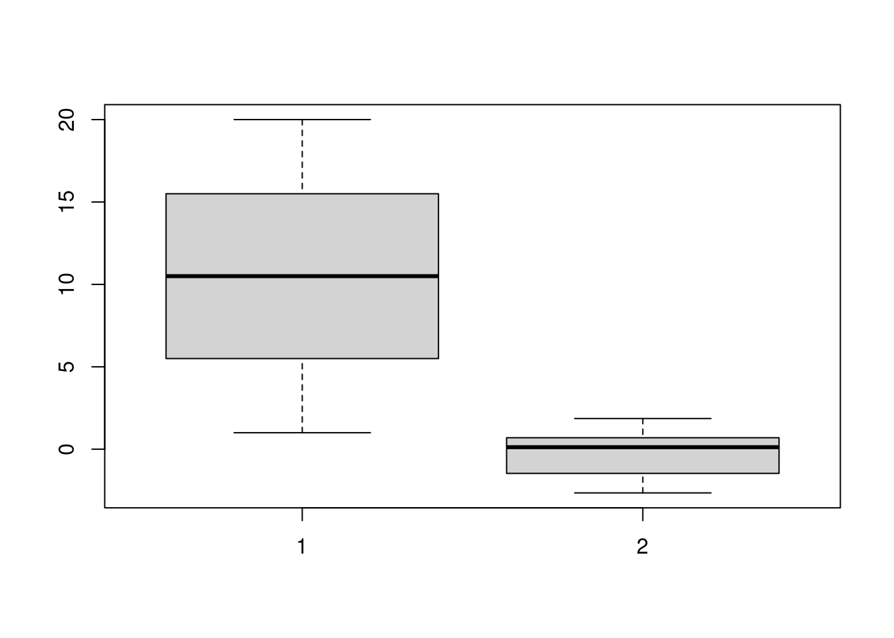

Chapitre6 Graphiques classiques
Regardons tout d’abord quelques fonctions permettant de réaliser des graphiques parmi les plus communs dans la recherche scientifique. Sous R, de tels graphes sont réalisés avec des High-level plotting functions, c.-à.d. que l’appel à ces fonctions effacera le précédent contenu du périphérique graphique actif. Mais, nous verrons dans le dernier chapitre qu’il est possible de contourner cet obstacle. On opposera ces fonctions aux Low-level plotting functions qui elles, permettront d’ajouter des éléments à un graphique pré-existant. C’est l’objet du chapitre suivant.
6.1 Diagramme de dispersion
Il s’agit d’un graphe classique permettant de représenter deux variables continues l’une en fonction de l’autre dans un nuage de points. Nous allons réutiliser pour cela la fonction plot().
Créons une variable contenant une série de valeurs allant de 1 à 20.
Remarque : les parenthèses permettent d’afficher dans la console le résultat de l’assignation. Générons une seconde variable avec 20 valeurs tirées aléatoirement selon une distribution normale de moyenne 0 et d’écart-type 1.
(var2 <- rnorm(n = 20, mean = 0, sd = 1))
#> [1] -1.272198953 -0.942555766 0.006864406 0.566901867 1.615820907
#> [6] -1.009511196 -0.597622818 0.334834956 0.010492193 -1.781728590
#> [11] -1.515594294 -0.427823437 0.615498863 0.817926783 0.486777697
#> [16] -0.863268106 1.863425322 -1.153635261 -1.866573721 1.192672685Représentons maintenant le nuage de points (scatterplot) formés des valeurs de var1 et var2.
Anticipons légèrement sur les chapitres suivants et intéressons-nous à l’argument type de la fonction plot(). Celui-ci permet de représenter les données de différentes manières : nuage de points, barres verticales, lignes, etc.
{ll}
Valeur & Représentation\
- & Points
- & Lignes reliées
- & Lignes non reliées
- & Points et lignes non reliées
- & Points et lignes reliées
- & Barres verticales
- & Plateau puis pente
- & Pente puis creux
- & Aucun symbole
Afin de bien comprendre les différences, partitionnons la fenêtre graphique en neuf régions distinctes (trois lignes et trois colonnes), chacune destinée à recevoir un plot spécifique avec une valeur différente pour l’argument type. Nous allons donc modifier le paramètre graphique mfrow de l’objet par(). Avec cet argument, les régions graphiques seront remplies en lignes.
Nous allons également rajouter un titre à chaque graphique qui contient la valeur de l’argument type. L’argument main permet de rajouter un titre principal à un graphe qui se positionnera en haut du graphique.
par(mfrow = c(3, 3))
plot(var1, var2, type = "p", main = "Type = p")
plot(var1, var2, type = "l", main = "Type = l")
plot(var1, var2, type = "b", main = "Type = b")
plot(var1, var2, type = "o", main = "Type = o")
plot(var1, var2, type = "c", main = "Type = c")
plot(var1, var2, type = "h", main = "Type = h")
plot(var1, var2, type = "s", main = "Type = s")
plot(var1, var2, type = "S", main = "Type = S")
plot(var1, var2, type = "n", main = "Type = n")
La fonction plot() offre de nombreux autres arguments qu’il est possible de modifier. C’est en partie ce que nous verrons tout au long de ce document, puisque cet enseignement met essentiellement l’accent sur cette fonction.
6.2 Boîte à moustaches
La boîte à moustaches est une représentation graphique très utile en
statistiques, puisqu’elle permet de résumer les caractéristiques de position
(médiane, 1er et 3ème quartiles, minimum et maximum) d’une variable
quantitative. Sous R, la fonction utilisée sera boxplot().
 Cette fonction s’applique sur des vecteurs, mais aussi sur des data frames. Elle possède de nombreux arguments. Par exemple, le tableau suivant liste les paramètres les plus courants.
{ll}
Cette fonction s’applique sur des vecteurs, mais aussi sur des data frames. Elle possède de nombreux arguments. Par exemple, le tableau suivant liste les paramètres les plus courants.
{ll}
Argument & Signification:
width& Largeur des boîtes (valeurs à fournir)varwidth& Largeur des boîtes (proportionnelle au n)outline& Suppression des outliershorizontal& Vertical ou horizontaladd& Rajout d’une boîteat& Coordonnée en x de la nouvelle boîte
L’argument plot mis à la valeur FALSE n’affiche pas de boîte à moustaches, mais retourne les différentes statistiques associées sous la console. Par exemple:
6.3 Diagramme en bâtons
Ce type de représentation est utile pour visualiser des données discrètes ou catégoriques. Chaque modalité de la variable catégorique (ou discrète) sera représentée par une barre verticale (ou horizontale) dont la longueur sera proportionnelle à son effectif (relatif ou absolu) parmi l’ensemble des modalités. Sous R, on réalise un tel graphique avec la fonction barplot().
Créons tout d’abord un vecteur contenant six modalités (chaînes de caractères).
(nom <- c("Vert", "Jaune", "Rouge", "Blanc", "Bleu", "Noir"))
#> [1] "Vert" "Jaune" "Rouge" "Blanc" "Bleu" "Noir"Maintenant, nous allons tirer aléatoirement 1000 valeurs (avec remise donc) dans ce vecteur afin que chaque couleur soit présente plusieurs fois.
echn <- sample(x = nom, size = 1000, replace = TRUE)
echn[1:20]
#> [1] "Noir" "Jaune" "Rouge" "Noir" "Vert" "Noir" "Noir" "Vert" "Jaune"
#> [10] "Bleu" "Jaune" "Jaune" "Rouge" "Bleu" "Vert" "Noir" "Rouge" "Rouge"
#> [19] "Bleu" "Vert"Comptons combien de fois se retrouve chaque modalité dans cette variable.
Visualisons cette nouvelle variable catégorique.

Nous pouvons également représenter cette même variable sous forme relative. Calculons la fréquence de chaque modalité et produisons un nouveau graphe.
(var5 <- var4/sum(var4))
#> echn
#> Blanc Bleu Jaune Noir Rouge Vert
#> 0.153 0.161 0.177 0.161 0.172 0.176Visuellement, rien ne changera, mis à part les valeurs portées sur l’axe des ordonnées. La fonction barplot() possède aussi de nombreux arguments. Nous vous invitons à consulter l’aide associée à cette fonction.
Il est possible de hachurer les rectangles plutôt que de leur associer une couleur. Pour ce faire, deux arguments doivent être spécifiés :
- density : nombre de hachures par pouce;
- angle : orientation des hachures dans le sens trigonométrique.
Par exemple,

6.4 Histogramme
L’histogramme permet de visualiser la répartition des valeurs d’une variable continue en créant des classes de valeurs. Il est très utile pour connaître la loi
de distribution que suivent les valeurs (loi normale, loi de Poisson, etc.). Sous R, ce graphe se fera à l’aide de la fonction hist().
Générons 1000 valeurs aléatoires selon une loi gaussienne.
var6 <- rnorm(n = 1000)
var6[1:20]
#> [1] -0.08653997 -1.40665327 0.13770925 0.60255826 0.03028161 0.69582727
#> [7] -2.24481773 -0.44393278 -0.61583993 -0.55765636 -0.81662665 -0.30917356
#> [13] -1.75114388 -0.48782868 0.28735039 -0.96842892 0.74767954 -0.84556710
#> [19] 1.18845564 0.04306645
De la même manière que pour les boîtes à moustaches, l’argument plot = FALSE ne trace pas l’histogramme, mais affiche dans la console les statistiques associées.
hist(var6, plot = FALSE)
#> $breaks
#> [1] -3.5 -3.0 -2.5 -2.0 -1.5 -1.0 -0.5 0.0 0.5 1.0 1.5 2.0 2.5 3.0 3.5
#> [16] 4.0
#>
#> $counts
#> [1] 2 4 19 52 75 165 191 200 146 67 60 14 4 0 1
#>
#> $density
#> [1] 0.004 0.008 0.038 0.104 0.150 0.330 0.382 0.400 0.292 0.134 0.120 0.028
#> [13] 0.008 0.000 0.002
#>
#> $mids
#> [1] -3.25 -2.75 -2.25 -1.75 -1.25 -0.75 -0.25 0.25 0.75 1.25 1.75 2.25
#> [13] 2.75 3.25 3.75
#>
#> $xname
#> [1] "var6"
#>
#> $equidist
#> [1] TRUE
#>
#> attr(,"class")
#> [1] "histogram"L’argument breaks permet de modifier les classes de l’histogramme. Une façon
simple de procéder consiste à donner le nombre de classes que l’on souhaite
représenter.

Nous aurions également pu indiquer les bornes de chaque classe désirée (par ex.
des classes tous les 0.25). De même, plusieurs algorithmes ont été implémentés
afin de déterminer un nombre de classes optimum . Consultez l’aide de cette
fonction pour en savoir plus.
Finalement, mentionnons que les arguments density et angle sont aussi disponibles pour la fonction hist(). Adéquatement définis, ils permettront d’hachurer les rectangles.
6.5 Diagramme sectoriel
Une alternative au diagramme en bâtons est le diagramme sectoriel (camembert). Regardons ce que ça donne avec les données précédentes (couleurs).

Dans les deux exemples précédents, nous avons défini des couleurs à l’aide de l’argument col. Dans le premier cas, nous avons indiqué le nom des couleurs : R implémente une palette de couleurs prédéfinies assez conséquente. Dans le second cas, nous avons utilisé la fonction rainbow() qui sélectionne un nombre donné de couleurs parmi les couleurs de l’arc-en-ciel. Nous y reviendrons dans le troisième chapitre.
Pour terminer, exécutez le code suivant sous R.
for (i in 1 : 250){
if (i > 1){
cols <- rainbow(250)[c(i:250, 1:(i-1))]
pie(rep(1, 250), col = cols, border = NA, labels = "")
}else{
pie(rep(1, 250), col = rainbow(250), border = NA, labels = "")
}
}Plutôt sympa, non ?
6.6 Fonctions mathématiques
Pour terminer ce chapitre, introduisons une fonction qui pourrait vous être utile. Il s’agit de la fonction curve() qui permet de tracer le comportement d’une fonction mathématique bornée. Regardons un exemple avec des fonctions trigonométriques.
par(mfrow = c(1, 3), mgp = c(2, 1, 0))
txt <- expression(f(x)==cos(x))
curve(cos(x), from = -10, to = 10, main = "Cosinus", ylab = txt)
txt <- expression(f(x)==sin(x))
curve(sin(x), from = -10, to = 10, main = "Sinus", ylab = txt)
txt <- expression(f(x)==tan(x))
curve(tan(x), from = -10, to = 10, main = "Tangente", ylab = txt)Ici, des éclaircissements s’imposent. Premièrement, nous avons modifié un autre paramètre graphique : mgp. Celui permet de contrôler le positionnement du nom des axes, des étiquettes des axes et des axes eux-mêmes. Ces positionnements sont relatifs à la région du plot. Nous y reviendrons plus loin.
La fonction expression() permet quant à elle d’utiliser l’écriture mathématique dans des graphiques. Consultez l’aide de cette fonction ainsi que celle de la fonction plotmath() pour en savoir plus.
par(mfrow = c(2, 3), mgp = c(2, 1, 0))
txt <- expression(f(x)==x)
curve(x^1, from = -1, to = 1, main = "Identité", ylab = txt)
txt <- expression(f(x)==x^2)
curve(x^2, from = -1, to = 1, main = "Quadratique", ylab = txt)
txt <- expression(f(x)==x^3)
curve(x^3, from = -1, to = 1, main = "Cubique", ylab = txt)
txt <- expression(f(x)==1/x)
curve(1/x, from = -1, to = 1, main = "Inverse", ylab = txt)
txt <- expression(f(x)==log(x))
curve(log(x), from = 0.0001, to = 10, main = "Logarithme", ylab = txt)
txt <- expression(f(x)==exp(x))
curve(exp(x), from = 0.0001, to = 10, main = "Exponentielle", ylab = txt)